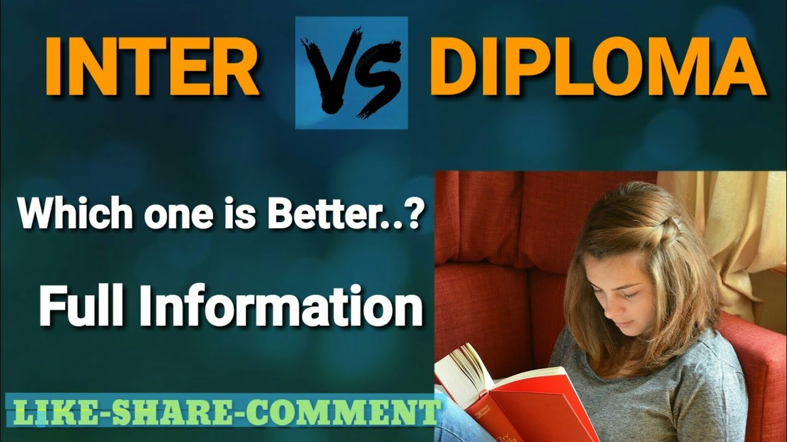

Differences between the intermediate and Diploma:
Intermediate is two years course after which you can pursue degree of
subjects taken in intermediate. In Diploma, you have to undergo three
years diploma course, you will get direct entry in second year of degree
courses. If you are good in academics, go with intermediate, it will
give you various options after having much knowledge about subjects, to
pursue which degree. If you are not good in studies, you can opt- for
diploma, it will give you practical knowledge and will help in jobs.

If you are very sure about your field, then only go with diploma. If
your family's economic situation is not good, then you should definitely
go with diploma. Only difference is like who have studied diploma are
posted as Junior Engineers and Intermediate then getting courses are
posted as Senior Engineers.
Career options after intermediate:
- Meddical
- Engineering
- Humanities
- Commerce
- Vocational studies
Career options after Diploma:
- Diploma in Engineering
- Diploma in Journalism
- Diploma in Fashion Technology
- Diploma in Nursing
Then after studying above areas you have many career opportunities in
all fields.
Advantages of Polytechnic:
- You have a technical certificate
- Immediate job will get you on basis of diploma
-
You will junior engineer and can apply in JE,loco pilot,technical
assistant and many more post in govt Job.
- It's equivalent to intermediate
-
If you understand well and do hard work in study then your mind and
understanding will be greater than intermediate
-
You will be also able to get a job on basis diploma and as well as
intermediate where equivalent is applicable. & In Govt. Job in which
intermediate equivalent applicable.
- You will get admission in B.tech in Second year direct
-
It enhances your skill & giving you potential to make successful
career
- Cost and time saving
-
Its easy path to join engineering degree because competition are lower
than intermediate to get admission in Engineering degree
-
After doing diploma your engineering degree study will be easier
because most of topic are already you studied in diploma.
-
Some diploma courses are very useful because degree level
qualification does not required e.g. fashion designing,interior
designing,fire and safety,dairy engineering,jwellery
design,textile,ceremic,plastic ,leather and etc.
Advantages of intermediate-
- All basic are covered
-
Your Genral engineering will be strong like if you choose MECHANICAL
diploma its may be your electrical portion will not be much strong as
like mechanics
- You can do MBBS which require 10+2
- And some diploma also require 10+2
-
many courses and some private organization for job require for 12th
qualification even after did dipoma.